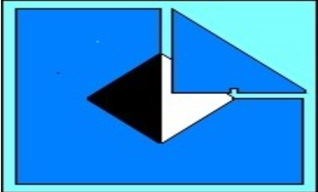

Reglas básicas del deporte de las grandes ligas
El objetivo del béisbol es anotar más carreras que el equipo contrario. Una carrera se anota cuando un jugador completa un recorrido por las cuatro bases sin ser eliminado.
💡 Dato importante: Un bateador recibe base por bolas (walk) después de 4 lanzamientos fuera de la zona de strike.
Reglas básicas del sóftbol (lanzamiento lento y modificado)
Al igual que el béisbol, el objetivo es anotar más carreras que el equipo contrario completando el recorrido de las bases.
💡 Dato importante: En lanzamiento lento, el lanzador debe mantener ambos pies en contacto con la goma de lanzamiento hasta soltar la pelota.
Normas específicas para el registro estadístico